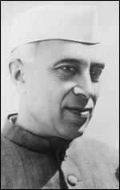

Jawaharlal Nehru was an Indian anti-colonial nationalist, secular humanist, social democrat, and author who was a central figure in India during the middle third of the 20th century. Nehru was a principal leader of the Indian nationalist movement in the 1930s and 1940s. Upon India's independence in 1947, he became the first prime minister of India, serving for 16 years.
Upon India's independence on 15 August 1947, Nehru gave a critically acclaimed speech, "Tryst with Destiny" he was sworn in as the Dominion of India's prime minister and raised the Indian flag at the Red Fort in Delhi. On 26 January 1950, when India became a republic within the Commonwealth of Nations, Nehru became the Republic of India's first prime minister.

Jawaharlal Nehru was born on 14 November 1889 in Allahabad, British India. His father, Motilal Nehru, a self-made wealthy barrister of Kashmiri Pandit origin, served twice as president of the Indian National Congress, in 1919-20 and 1928-29.His mother, Swarup Rani Thussu, came from a Kashmiri Pandit family settled in Lahore.Jawaharlal was the eldest of three children.The elder of his two sisters, Vijaya Lakshmi, held political office and became president of the United Nations General Assembly.His youngest sister, Krishna Hutheesing, became a noted writer and biographer.
Nehru developed an interest in Indian politics during his time in Britain. In December 1912, he attended the annual session of the Congress at Patna.The Congress was then a party of moderates and elites, and Nehru described the meeting as "very much an English-knowing upper-class affair".He doubted the effectiveness of the Congress, but agreed to collect funds for the Indian civil rights movement led by Mahatma Gandhi in South Africa
When World War I broke out, the Indian princely states and upper middle-class supported the British government. However, educated Indians enjoyed seeing their British rulers humbled. Nehru viewed the war with mixed feelings, and sympathised most with France, whose culture he admired.He volunteered for St John Ambulance and worked as a provincial secretary in Allahabad. He spoke out against the censorship acts passed by the British government in India.
Nehru's health began declining steadily in 1962. In the spring of 1962, he was affected with a viral infection over which he spent most of April in bed.He spoke to the doctors who attended to him for a brief while, and almost immediately he collapsed. He remained unconscious until he died at 13:44. His death was announced in the Lok Sabha at 14:00 local time on 27 May 1964; the cause of death was believed to be a heart attack. Draped in the Indian national Tri-colour flag, the body of Jawaharlal Nehru was placed for public viewing. "Raghupati Raghava Rajaram" was chanted as the body was placed on the platform. On 28 May, Nehru was cremated in accordance with Hindu rites at the Shantivan on the banks of the Yamuna, witnessed by 1.5 million mourners who had flocked into the streets of Delhi and the cremation grounds.